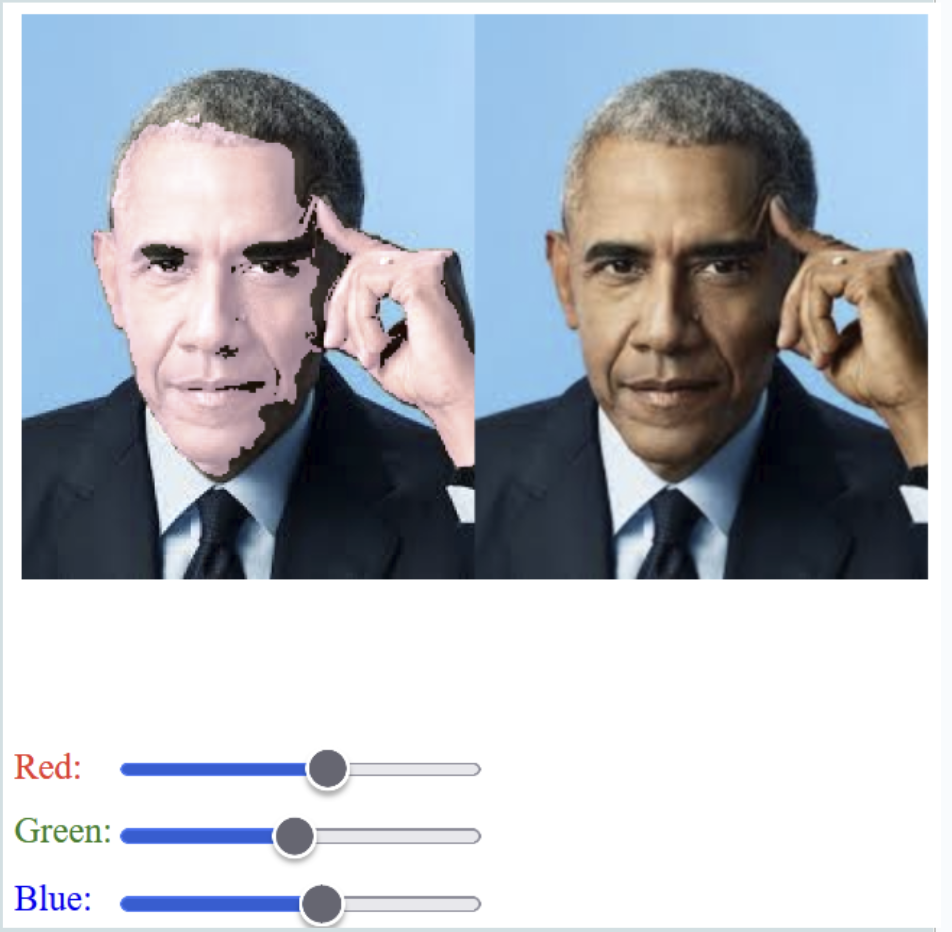
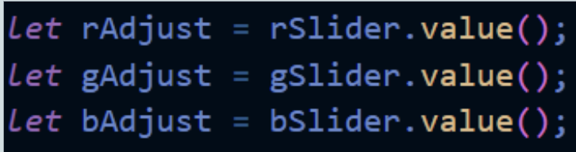
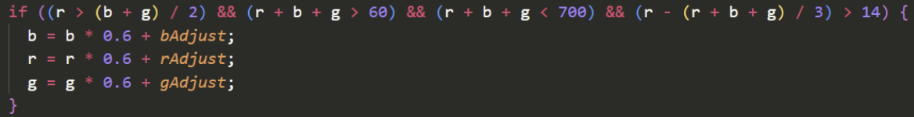

Med udgangspunkt i følgende case, skal du udvikle en del af en løsning. Alle ved at billeder af hvordan verden, og især os selv, ser ud er dybt uinteressante. For at ændre på dette skal I lave et billedbehandlingsprogram.
I skal derfor udvikle et program, der:
I den forbindelse skal I have fokus på brugeren hvor I skal:
I logbogen skal I dokumentere arbejdsprocessen og produktet undervejs.
Vores program går ud på, at brugeren kan ændre RGB-værdierne for udvalgte pixels i et billede ved hjælp af en begrænsningsværdi. Det gør det muligt at ændre farven på et specifikt objekt i billedet. I vores prototype har vi anvendt et billede af Barack Obama, hvor vi har ændret de pixels, der repræsenterer hans hudfarve. For at gøre programmet mere brugervenligt har vi implementeret nogle sekundære faciliteter, såsom sliders, der hver især justerer henholdsvis den røde, grønne eller blå farve i billedet. Disse sliders er tydeligt markeret med tekst, så brugeren nemt kan se, hvilken farve de styrer. Dette gør det enkelt for brugeren at vælge, hvilken farve de ønsker at ændre objektet til.
koden opretter teksten "Red:" i rød farve ved at bruge createP('Red:'). position(5, hy - 4) placerer teksten tæt på slideren for den røde værdi.
rSlider = createSlider(0, 255, 0) opretter en slider, der kan justeres mellem 0 (ingen rød farve) og 255 (fuld rød farve). Sliderens position bestemmes også med rSlider.position(x, h + 10) for at placere den under teksten "Red:".
rSlider.input(loop) registrerer, når brugeren justerer slideren. loop()-funktionen opdaterer farven i realtid baseret på sliderens værdi.
De samme trin gentages for de grønne og blå værdier. For grøn: createP('Green:'), gSlider = createSlider(0, 255, 0), og så videre. For blå: createP('Blue:'), bSlider = createSlider(0, 255, 120).
let rAdjust = rSlider.value();
let gAdjust = gSlider.value();let bAdjust = bSlider.value();
Disse linjer deklarerer tre variabler: rAdjust, gAdjust og bAdjust. Hver af disse vil holde værdien fra den respektive slider.
.value()-metoden bruges til at hente den aktuelle værdi fra sliderne rSlider, gSlider og bSlider. For eksempel, hvis brugeren justerer den røde slider, vil rSlider.value() returnere den nuværende værdi af den slider, som kan være mellem 0 og 255.
Værdierne, der hentes fra sliderne, gemmes i variablerne, så de kan bruges senere i programmet, for eksempel til at ændre farven på et objekt.
if ((r > g && r > b) || (r + b + g > 60 && (r + b + g) / 3 > 14)) {
Denne betingelse tjekker to ting:
Om den røde værdi (r) er større end både den grønne (g) og blå (b) værdi. Eller om summen af RGB-værdierne er større end 60, og gennemsnittet af dem er større end 14. Hvis en af disse betingelser er sand, udføres koden inden for {}.
b = b * 0.6 + bAdjust;
Denne linje justerer den blå værdi (b). Den nuværende værdi af b multipliceres med 0.6, hvilket reducerer den, og derefter tilføjes værdien fra slideren (bAdjust). Dette kan resultere i, at den blå farve bliver lysere, hvis slideren er høj, eller mørkere, hvis slideren er lav.
r = r * 0.6 + rAdjust;
Tilsvarende justeres den røde værdi (r) på samme måde som den blå. Den nuværende værdi multipliceres med 0.6, og den justerede værdi fra slideren (rAdjust) tilføjes.
g = g * 0.6 + gAdjust;
Den grønne værdi (g) justeres på samme måde som de øvrige farver.
Vores projekt fokuserer på at redigere billeder ved manipulation på pixelniveau, hvilket er i tråd med kravene i projektbeskrivelsen.
Pixelomdannelse via RGB-værdiændring
Den primære facilitet i vores projekt er evnen til at ændre RGB-værdierne for specifikke pixels i et billede. Dette gør det muligt for brugeren at ændre farven på objekter i billedet ved simpelthen at justere værdierne for rød, grøn og blå. Afhængigt af de angivne kriterier for hver farve (r, g, b) kan brugeren opnå en bred vifte af farveændringer, hvilket giver mulighed for præcise og målrettede justeringer.
Brugervenlige Sliders
For at gøre vores applikation mere brugervenlig har vi implementeret sliders, som giver brugeren mulighed for nemt at justere RGB-værdierne i realtid. Disse sliders er intuitivt designet og gør det muligt for brugeren at se ændringerne i farverne straks, hvilket forbedrer den samlede brugeroplevelse og interaktivitet.
Drag-and-Drop Funktionalitet
Som et næste skridt planlægger vi at implementere drag-and-drop-funktionalitet. Dette vil yderligere forbedre brugerens interaktion med applikationen ved at gøre det muligt at importere billeder direkte på en enkel og effektiv måde. Dette tiltag vil gøre det lettere for brugerne at arbejde med deres billeder.